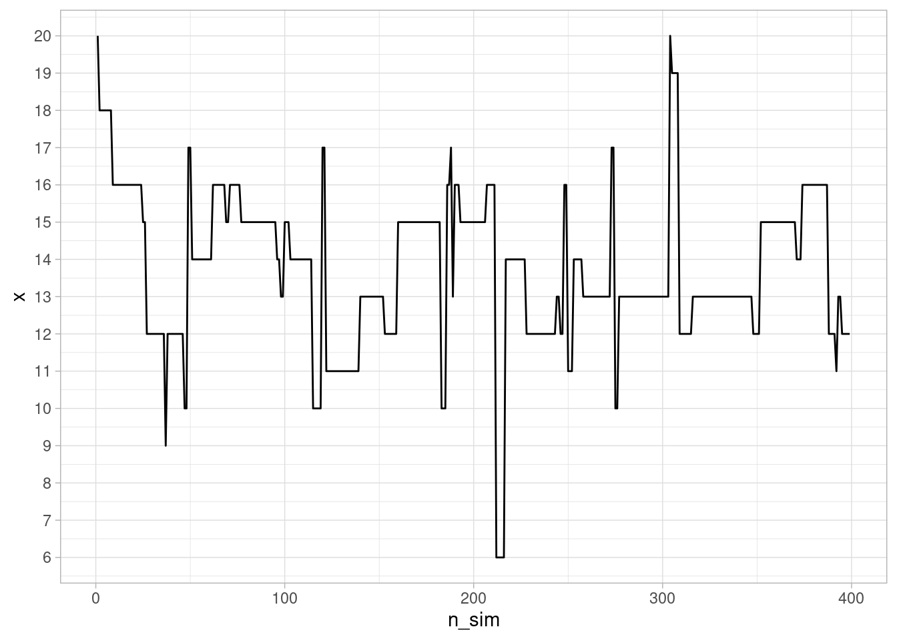
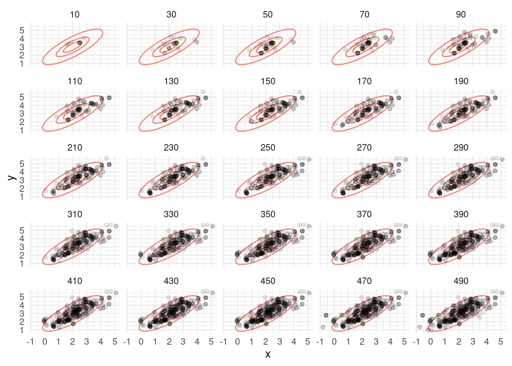

Código
library(tidyverse)
library(kableExtra)
library(DiagrammeR)
ggplot2::theme_set(ggplot2::theme_light())
inv_logit <- \(x) 1 / (1 + exp(-x)) library(tidyverse)
library(kableExtra)
library(DiagrammeR)
ggplot2::theme_set(ggplot2::theme_light())
inv_logit <- \(x) 1 / (1 + exp(-x)) En esta sección exlicaremos brevemente cómo funcionan paquetes como Stan para producir simulaciones de una posteriores complicadas en dimensión alta.
En primer lugar, recordemos que si queremos calcular la posterior de un modelo (generalmente para calcular después resúmenes que involucran integrales de esta posterior) tenemos los siguiente enfoques:
Stan utiliza 3, y hay variedad de algoritmos MCMC. Ya discutimos que 1, la aproximación analítica, es en general imposible (a menos fuera de ciertos modelos restringidos). La aproximación 2 excesivamente intensiva, al grado que sólo para modelos muy chicos y con pocos parámetros es posible utilizarla. Existen otros métodos también como aproximaciones cuadráticas que en ciertos casos funcionan, pero son limitados en su aplicación.
La idea de simulación de variables aleatorias es ahora fundamental en muchas áreas científicas, incluyendo la estadística, y los métodos que la utilizan se llaman métodos de Monte Carlo. Por ejemplo, considera el método bootstrap, pruebas de permutaciones, validación cruzada, y en general simulación para cálculo de resúmenes que son difíciles de calcular directamente (por ejemplo, la mediana de una distribución Gamma, ver Median approximations and bounds aquí).
Uno de los primeros algoritmos MCMC fue el de Metropolis-Hastings, que veremos primero en algunos ejemplos. Veremos también por qué ahora tenemos mejores opciones que MH para estimar posteriores de nuestros modelos.
Supongamos que queremos simular de una variable aleatoria \(X\) con distribución discreta sobre los valores \(1,2\ldots, k\) con probabilidades \(p(1),p(2),\ldots,p(k)\). Este problema puede resolverse fácilmente de varias maneras, pero utilizaremos un método de Monte Carlo tipo Metropolis. Supongamos que podemos simular de una variable aleatoria \(U\) que es uniforme en \(1,2,\ldots, k\) (con probabilidades iguales a 1/k).
Lo que podemos hacer es lo que sigue, para \(i=1,\ldots, M\):
Para cada \(i\),
El resultado es una sucesión de valores \(x_1,x_2,\ldots, x_M\). Es posible demostrar que la distribución de estas \(x_i\) converge a la distribución \(p(1),\ldots, p(k)\) si \(M\) es suficientemente grande.
Este método se llama Metropolis-Hastings. Es un método de Monte Carlo, y como podemos ver, se trata de una cadena de Markov, pues la distribución cada siguiente lugar \(x_{i+1}\), condicionada al valor actual \(x_i\) no depende de valores anteriores de las \(x\).
#set.seed(451123)
# definimos estas p
k <- 40
p <- exp(-(1:k - k/3)^2 / 10)
p <- p /sum(p)
dist_obj <- tibble(x = 1:k, p = p)
# simulamos
M <- 200000
x <- numeric(M)
x[1] <- 20
for(i in 1:M){
u <- sample(1:k, 1)
q <- p[u] / p[x[i]]
if(runif(1) < q){
x[i+1] <- u
} else {
x[i+1] <- x[i]
}
}En rojo mostramos las probabilidades objetivo que queremos estimar, y en negro las estimadas con nuestro método de arriba.
resultados_sim <- tibble(x = x) |>
mutate(n_sim = row_number())
resumen_sim <- resultados_sim |> count(x) |>
right_join(tibble(x = 1:k, p = p)) |>
mutate(n = ifelse(is.na(n), 0, n)) |>
mutate(p_aprox = n / sum(n))Joining with `by = join_by(x)`ggplot(dist_obj, aes(x = x)) +
geom_point(aes(y = p)) +
geom_point(data = resumen_sim,
aes(y = p_aprox), color = "red", size = 3, alpha = 0.5) Como vemos, los valores de \(x_1,\ldots, x_M\) se distribuyen aproximadamente como la distribución \(p\) objetivo. Esta es una manera de simular valores de esta distribución discreta \(p\). Podemos ver cómo se ven las simulaciones sucesivas:
ggplot(resultados_sim |> filter(n_sim < 400), aes(x = n_sim, y = x)) +
geom_line() + scale_y_continuous(breaks = 1:20)
El defecto que tiene este algoritmo es que puede ser relativamente lento, pues vemos que hay periodos largos donde se “atora” en valores de probabilidad relativamente alta. La razón es que en muchos pasos, estamos proponiendo “saltos al vacío” a lugares de probabilidad muy baja, que rara vez se aceptan.
Podemos hacer más eficiente nuestro algoritmo si le permitimos explorar con mayor facilidad los posibles valores de \(x\). Esto se logra proponiendo saltos locales: si estamos en \(x_i\), entonces proponemos los valores \(x_i - 1\) y \(x_i + 1\) con la misma probabilidad 1/2 (excepto en los extremos donde sólo proponemos \(x_i,x_i+1\) o \(x_i-1,x_i\)).
Proponemos entonces la suguiente modificación del paso 1 de propuesta:
Para cada \(i\),
Esto lo escribimos como sigue:
#set.seed(4511)
# simulamos
x <- numeric(M)
x[1] <- 20
for(i in 1:M){
u <- sample(c(x[i] - 1, x[i] + 1), 1)
if(u == k+1) u <- k
if(u == 0) u <- 1
q <- p[u] / p[x[i]]
if(runif(1) < q){
x[i+1] <- u
} else {
x[i+1] <- x[i]
}
}Obtenemos:
resultados_sim_2 <- tibble(x = x) |>
mutate(n_sim = row_number())
resumen_sim_2 <- resultados_sim_2 |> count(x) |>
mutate(p_aprox = n / sum(n))
ggplot(dist_obj, aes(x = x)) +
geom_point(aes(y = p)) +
geom_point(data = resumen_sim_2,
aes(y = p_aprox), color = "red", size = 3, alpha = 0.5) 
Y podemos ver cómo evoluciona nuestra cadena de Markov:
ggplot(resultados_sim_2 |> filter(n_sim < 400), aes(x = n_sim, y = x)) +
geom_line() + scale_y_continuous(breaks = 1:10)
¿Cómo se comparan estos dos métodos? Podemos ver por ejemplo cómo se comparan las distribuciones aproximadas hasta cierto número de iteraciones con la verdadera distribución objetivo:
approx_sim <- map_df(seq(200, 30000, by = 200), function(n_sims){
resumen_1 <- resultados_sim |> filter(n_sim <= n_sims) |>
count(x) |>
mutate(p_aprox = n / sum(n)) |>
select(-n) |>
right_join(dist_obj, by = "x") |>
mutate(metodo = "MH-1") |>
mutate(n_sims = n_sims)
resumen_2 <- resultados_sim_2 |> filter(n_sim <= n_sims) |>
count(x) |>
mutate(p_aprox = n / sum(n)) |>
select(-n) |>
right_join(dist_obj, by = "x") |>
mutate(metodo = "MH-2") |>
mutate(n_sims = n_sims)
bind_rows(resumen_1, resumen_2) |>
mutate(p_aprox = ifelse(is.na(p_aprox), 0, p_aprox))
})approx_sim |>
mutate(dif_abs = abs (p_aprox-p)) |>
group_by(metodo, n_sims) |>
summarise(dif_abs = sum(dif_abs)) |>
ggplot(aes(n_sims, dif_abs, color = metodo)) +
geom_line() `summarise()` has grouped output by 'metodo'. You can override using the
`.groups` argument.
En este caso, considera qué es lo que sucede en cada uno de estos casos:
Este es el primer balance que existe en este algoritmo: tomar pasos grandes y balancear las probabilidades quizá rechazando muy frecuentemente (no es eficiente), o tomar pasos chicos y vagar más tiempo para visitar regiones de alta probabilidad, aunque con menos tasa de rechazo. Dependiendo de la distribución que queremos aproximar podemos inclinarnos más por una o por otra opción.
¿Por qué funcionan estos algoritmos? Supongamos que en cada paso, se cumple que (balance detallado): \[{q(x|y)}p(y) = {q(y|x)}{p(x)}\] donde \(q(x|y)\) son las probabilidades de transición de nuestra cadena de Markov propuesta. Esta ecuación dice que si la probabilidad se distribuye como \(p(x)\), entonces al transicionar con \(q\) la probabilidad fluje de manera que se mantiene estática en \(p\), es decir \(p\) es una distribución estacionaria. Esto es fácil de demostrar pues \[\sum_{y} q(x|y)p(y) = \sum_{y} q(y|x)p(x) = p(x) \sum_{y} q(y|x) = p(x).\]
Bajo otros supuestos adicionales de ergodicidad (aperiodicidad y tiempos de recurrencia finitos, es decir, las transiciones mezclan bien los estados), entonces podemos simular la cadena de Markov por un tiempo suficientemente largo y con esto obtener una muestra de la distribución objetivo \(p\).
¿Cómo podemos diseñar entonces las \(q(x|y)\) correspondientes? Comenzamos considerando distribuciones propuesta \(q_0(x|y)\) que no satisfacen la ecuación de balance, y supondremos como en los ejemplos de arriba (verifícalo) que nuestras transiciones tienen probabilidades simétricas \(q_0(y|x) = q_0(x|y)\). Entonces, cuando \(p(y)/p(x) > 1\), queremos transicionar de \(x\) a \(y\) con más frecuencia que de \(y\) a \(x\). Comenzando en \(x\), si la propuesta de \(q_0\) es \(y\), podríamos poner entonces que el sistema transicione con probabilidad 1 a \(y\). Sin embargo, si empezamos en \(y\) y la propuesta es \(x\), el sistema sólo transiciona de \(y\) a \(x\) con probabilidad \(p(x)/p(y)\).
De esta manera, obtenemos que bajo \(q(y|x)\), \(x\) transiciona a \(y\) con probabilidad \(\min\{1, p(y)/p(x)\}\). Entonces, el cociente \(\frac{q(y|x)}{q(x|y)}\) es igual a \(\frac{p(y)}{p(x)}\) si \(p(y)<p(x)\), y es igual a \(1/\frac{p(x)}{p(y)} = \frac{p(y)}{p(x)}\) si \(p(y)>p(x)\).
En MCMC, buscamos un cadena de Markov que, en el largo plazo, visite cada posible parámetro proporcionalmente a la probabildad posterior de cada parámetro.
Supongamos ahora que quisiéramos simular de una normal multivariada con media en c(2,3) y matriz de covarianza \(\Sigma\), que supondremos es tal que la desviación estándar de cada variable es 1 y la correlación es 0.8. La matriz \(\Sigma\) tiene 1 en la diagonal y 0.8 fuera de la diagonal.
La distribución objetivo \(p\) está dada entonces (módulo una constante de proporcionalidad):
Sigma <- matrix(c(1, 0.8, 0.8, 1), nrow = 2)
Sigma_inv <- solve(Sigma)
m <- c(2, 3)
log_p <- function(z){
- 0.5 * (t(z-m) %*% Sigma_inv %*% (z-m))
}Nótese que como Metropolis hace cocientes de probabilidades, sólo es necesario conocer la densidad objetivo módulo una constante de proporcionalidad.
Una algoritmo de Metropolis podría ser el siguiente:
# simulamos
M <- 50000
simular_normal <- function(M, m, Sigma, delta_x, delta_y){
z <- matrix(nrow = M, ncol = 2)
z[1, ] <- c(2.5, 3.2)
colnames(z) <- c("x", "y")
rechazo <- 0
for(i in 1:(M-1)){
x_prop <- rnorm(1, z[i, 1], delta_x)
y_prop <- rnorm(1, z[i, 2], delta_y)
z_prop <- c(x_prop, y_prop)
q <- exp(log_p(z_prop) - log_p(z[i, ]))
if(runif(1) < q){
z[i + 1, ] <- z_prop
} else {
rechazo <- rechazo + 1
z[i + 1, ] <- z[i, ]
}
}
print(rechazo / M)
z_tbl <- as_tibble(z) |>
mutate(n_sim = row_number())
z_tbl
}
z_tbl <- simular_normal(M, m, Sigma, 1, 1)[1] 0.60038Vemos que tenemos una tasa alta de rechazos. ¿Por qué? Veamos cómo se ven las simulaciones después de 1000 iteraciones:
# estas las usamos para graficar
sims_normal <- mvtnorm::rmvnorm(10000, mean = m, sigma = Sigma)
colnames(sims_normal) <- c("x", "y")
sims_normal <- as_tibble(sims_normal)
graf_tbl <- map_df(seq(10, 500, 20), function(i){
z_tbl |> filter(n_sim <= i) |> mutate(num_sims = i)
})
ggplot(graf_tbl, aes(x, y)) +
stat_ellipse(data = sims_normal, aes(x, y),
level = c( 0.9), type = "norm", colour = "salmon") +
stat_ellipse(data = sims_normal, aes(x, y),
level = c( 0.5), type = "norm", colour = "salmon") +
geom_point(alpha = 0.1) +
facet_wrap(~num_sims) + theme_minimal()
Observaciones:
Podemos entonces proponer saltos más chicos, por ejemplo:
z_tbl <- simular_normal(M, m, Sigma, 0.2, 0.2)[1] 0.1568graf_tbl <- map_df(seq(10, 500, 20), function(i){
z_tbl |> filter(n_sim <= i) |> mutate(num_sims = i)
})
ggplot(graf_tbl, aes(x, y)) +
stat_ellipse(data = sims_normal, aes(x, y),
level = c( 0.9), type = "norm", colour = "salmon") +
stat_ellipse(data = sims_normal, aes(x, y),
level = c( 0.5), type = "norm", colour = "salmon") +
geom_point(alpha = 0.1) +
facet_wrap(~num_sims) + theme_minimal()
Observaciones:
En el algoritmo de Metropolis Hastings hay una tensión natural en tamaño de salto y tasa de aceptación. Si el tamaño de los saltos es muy grande, la tasa de aceptación es baja y esto producen ineficiencias. Si el tamaño de los saltos es muy chico, la tasa de aceptación es más alta, pero esto también es ineficiente.
Existen métodos que pueden superar este problema, como son muestreo de Gibbs y Monte Carlo Hamiltoniano. El primero no lo discutiremos, pues requiere poder simular fácilmente de cada parámetro dados los otros, y esto no siempre es posible. Veremos más el segundo, donde usaremos información del gradiente de la distribución objetivo para proponer exploración más eficiente.